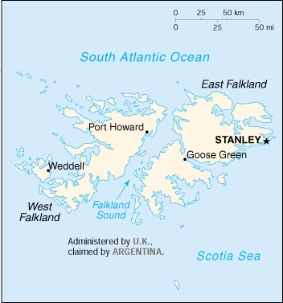

(overseas territory of the UK; also claimed by Argentina)

|
Falkland Islands (Islas Malvinas) (overseas territory of the UK; also claimed by Argentina) |
|
| Introduction Geography People Government Economy Communications Transportation Military Transnational Issues | ||
|  | ||
| Falkland Islands (Islas Malvinas) | Introduction | Top of Page |
| Background: | Although first sighted by an English navigator in 1592, the first landing (English) did not occur until almost a century later in 1690, and the first settlement (French) was not established until 1764. The colony was turned over to Spain two years later and the islands have since been the subject of a territorial dispute, first between Britain and Spain, then between Britain and Argentina. The UK asserted its claim to the islands by establishing a naval garrison there in 1833. Argentina invaded the islands on 2 April 1982. The British responded with an expeditionary force that landed seven weeks later and after fierce fighting forced Argentine surrender on 14 June 1982. |
| Falkland Islands (Islas Malvinas) | Geography | Top of Page |
| Location: | Southern South America, islands in the South Atlantic Ocean, east of southern Argentina |
| Geographic coordinates: | 51 45 S, 59 00 W |
| Map references: | South America |
| Area: |
total:
12,173 sq km
land: 12,173 sq km water: 0 sq km note: includes the two main islands of East and West Falkland and about 200 small islands |
| Area - comparative: | slightly smaller than Connecticut |
| Land boundaries: | 0 km |
| Coastline: | 1,288 km |
| Maritime claims: |
continental shelf:
200 NM
exclusive fishing zone: 200 NM territorial sea: 12 NM |
| Climate: | cold marine; strong westerly winds, cloudy, humid; rain occurs on more than half of days in year; occasional snow all year, except in January and February, but does not accumulate |
| Terrain: | rocky, hilly, mountainous with some boggy, undulating plains |
| Elevation extremes: |
lowest point:
Atlantic Ocean 0 m
highest point: Mount Usborne 705 m |
| Natural resources: | fish, wildlife |
| Land use: |
arable land:
0%
permanent crops: 0% permanent pastures: 99% forests and woodland: 0% other: 1% (1993 est.) |
| Irrigated land: | NA sq km |
| Natural hazards: | strong winds persist throughout the year |
| Environment - current issues: | NA |
| Geography - note: | deeply indented coast provides good natural harbors; short growing season |
| Falkland Islands (Islas Malvinas) | People | Top of Page |
| Population: | 2,895 (July 2001 est.) |
| Age structure: |
0-14 years:
NA%
15-64 years: NA% 65 years and over: NA% |
| Population growth rate: | 2.43% (2001 est.) |
| Birth rate: | NA births/1,000 population |
| Death rate: | NA deaths/1,000 population |
| Net migration rate: | NA migrant(s)/1,000 population |
| Infant mortality rate: | NA deaths/1,000 live births |
| Life expectancy at birth: |
total population:
NA years
male: NA years female: NA years |
| Total fertility rate: | NA children born/woman |
| HIV/AIDS - adult prevalence rate: | NA% |
| HIV/AIDS - people living with HIV/AIDS: | NA |
| HIV/AIDS - deaths: | NA |
| Nationality: |
noun:
Falkland Islander(s)
adjective: Falkland Island |
| Ethnic groups: | British |
| Religions: | primarily Anglican, Roman Catholic, United Free Church, Evangelist Church, Jehovah's Witnesses, Lutheran, Seventh-Day Adventist |
| Languages: | English |
| Falkland Islands (Islas Malvinas) | Government | Top of Page |
| Country name: |
conventional long form:
none
conventional short form: Falkland Islands (Islas Malvinas) |
| Dependency status: | overseas territory of the UK; also claimed by Argentina |
| Government type: | NA |
| Capital: | Stanley |
| Administrative divisions: | none (overseas territory of the UK; also claimed by Argentina) |
| Independence: | none (overseas territory of the UK; also claimed by Argentina) |
| National holiday: | Liberation Day, 14 June (1982) |
| Constitution: | 3 October 1985; amended 1997 and 1998 |
| Legal system: | English common law |
| Suffrage: | 18 years of age; universal |
| Executive branch: |
chief of state:
Queen ELIZABETH II (since 6 February 1952)
head of government: Governor Donald LAMONT (since NA May 1999); Chief Executive A. M. GURR (since NA); Financial Secretary D. F. HOWATT (since NA) cabinet: Executive Council; three members elected by the Legislative Council, two ex officio members (chief executive and the financial secretary), and the governor elections: none; the monarch is hereditary; governor appointed by the monarch |
| Legislative branch: |
unicameral Legislative Council (10 seats - 2 ex officio, 8 elected by popular vote, members serve four-year terms) presided over by the governor
elections: last held 9 October 1997 (next to be held NA October 2001) election results: percent of vote - NA%; seats - independents 8 |
| Judicial branch: | Supreme Court (chief justice is a nonresident); Magistrates Court (senior magistrate presides over civil and criminal divisions) |
| Political parties and leaders: | none; all independents |
| Political pressure groups and leaders: | none |
| International organization participation: | ICFTU |
| Diplomatic representation in the US: | none (overseas territory of the UK; also claimed by Argentina) |
| Diplomatic representation from the US: | none (overseas territory of the UK; also claimed by Argentina) |
| Flag description: | blue with the flag of the UK in the upper hoist-side quadrant and the Falkland Island coat of arms in a white disk centered on the outer half of the flag; the coat of arms contains a white ram (sheep raising is the major economic activity) above the sailing ship Desire (whose crew discovered the islands) with a scroll at the bottom bearing the motto DESIRE THE RIGHT |
| Falkland Islands (Islas Malvinas) | Economy | Top of Page |
| Economy - overview: | The economy was formerly based on agriculture, mainly sheep farming, but today fishing contributes the bulk of economic activity. In 1987 the government began selling fishing licenses to foreign trawlers operating within the Falklands exclusive fishing zone. These license fees total more than $40 million per year, which goes to support the island's health, education, and welfare system. Squid accounts for 75% of the fish taken. Dairy farming supports domestic consumption; crops furnish winter fodder. Exports feature shipments of high-grade wool to the UK and the sale of postage stamps and coins. To encourage tourism, the Falkland Islands Development Corporation has built three lodges for visitors attracted by the abundant wildlife and trout fishing. The islands are now self-financing except for defense. The British Geological Survey announced a 200-mile oil exploration zone around the islands in 1993, and early seismic surveys suggest substantial reserves capable of producing 500,000 barrels per day; to date no exploitable site has been identified. An agreement between Argentina and the UK in 1995 seeks to defuse licensing and sovereignty conflicts that would dampen foreign interest in exploiting potential oil reserves. |
| GDP: | purchasing power parity - $52 million (FY95/96 est.) |
| GDP - real growth rate: | 1% (FY95/96 est.) |
| GDP - per capita: | purchasing power parity - $19,000 (FY95/96 est.) |
| GDP - composition by sector: |
agriculture:
NA%
industry: NA% services: NA% |
| Population below poverty line: | NA% |
| Household income or consumption by percentage share: |
lowest 10%:
NA%
highest 10%: NA% |
| Inflation rate (consumer prices): | 3.6% (1998) |
| Labor force: | 1,100 (est.) |
| Labor force - by occupation: | agriculture 95% (mostly sheepherding and fishing) |
| Unemployment rate: | full employment; labor shortage |
| Budget: |
revenues:
$66.2 million
expenditures: $67.9 million, including capital expenditures of $23.2 million (FY98/99 est.) |
| Industries: | wool and fish processing; sale of stamps and coins |
| Industrial production growth rate: | NA% |
| Electricity - production: | 12 million kWh (1999) |
| Electricity - production by source: |
fossil fuel:
100%
hydro: 0% nuclear: 0% other: 0% (1999) |
| Electricity - consumption: | 11.2 million kWh (1999) |
| Electricity - exports: | 0 kWh (1999) |
| Electricity - imports: | 0 kWh (1999) |
| Agriculture - products: | fodder and vegetable crops; sheep, dairy products |
| Exports: | $7.6 million (1995) |
| Exports - commodities: | wool, hides, meat |
| Exports - partners: | UK, Japan, Chile, NZ |
| Imports: | $24.7 million (1995) |
| Imports - commodities: | fuel, food and drink, building materials, clothing |
| Imports - partners: | UK, Japan, Chile, NZ |
| Debt - external: | $NA |
| Economic aid - recipient: | $1.7 million (1995) |
| Currency: | Falkland pound (FKP) |
| Currency code: | FKP |
| Exchange rates: | Falkland pounds per US dollar - 0.6764 (January 2001), 0.6596 (2000), 0.6180 (1999), 0.6037 (1998), 0.6106 (1997), 0.6403 (1996); note - the Falkland pound is at par with the British pound |
| Fiscal year: | 1 April - 31 March |
| Falkland Islands (Islas Malvinas) | Communications | Top of Page |
| Telephones - main lines in use: | NA |
| Telephones - mobile cellular: | NA |
| Telephone system: |
general assessment:
NA
domestic: government-operated radiotelephone and private VHF/CB radiotelephone networks provide effective service to almost all points on both islands international: satellite earth station - 1 Intelsat (Atlantic Ocean) with links through London to other countries |
| Radio broadcast stations: | AM 1, FM 7, shortwave 0 (1998) |
| Radios: | 1,000 (1997) |
| Television broadcast stations: | 2 (operated by the British Forces Broadcasting Service) (1997) |
| Televisions: | 1,000 (1997) |
| Internet country code: | .fk |
| Internet Service Providers (ISPs): | 2 (2000) |
| Internet users: | NA |
| Falkland Islands (Islas Malvinas) | Transportation | Top of Page |
| Railways: | 0 km |
| Highways: |
total:
440 km
paved: 50 km unpaved: 390 km |
| Waterways: | none |
| Ports and harbors: | Stanley |
| Merchant marine: | none (2000 est.) |
| Airports: | 5 (2000 est.) |
| Airports - with paved runways: |
total:
2
2,438 to 3,047 m: 1 under 914 m: 1 (2000 est.) |
| Airports - with unpaved runways: |
total:
3
under 914 m: 3 (2000 est.) |
| Falkland Islands (Islas Malvinas) | Military | Top of Page |
| Military branches: | British Forces Falkland Islands (includes Army, Royal Air Force, Royal Navy, and Royal Marines), Police Force |
| Military expenditures - dollar figure: | $NA |
| Military expenditures - percent of GDP: | NA% |
| Military - note: | defense is the responsibility of the UK |
| Falkland Islands (Islas Malvinas) | Transnational Issues | Top of Page |
| Disputes - international: | claimed by Argentina |
{kind=link}